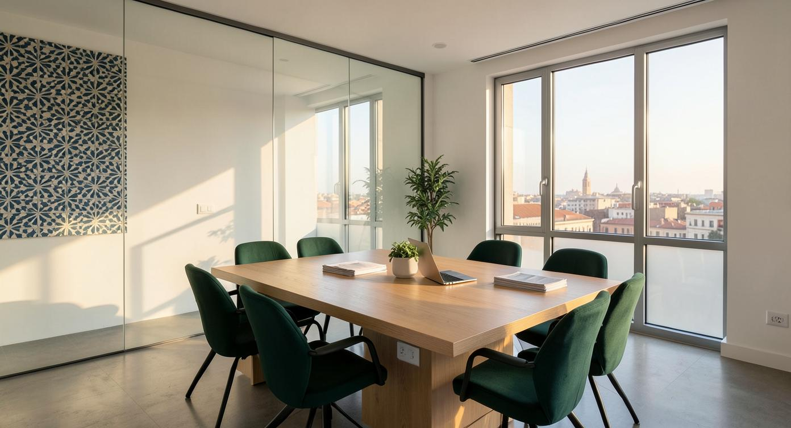
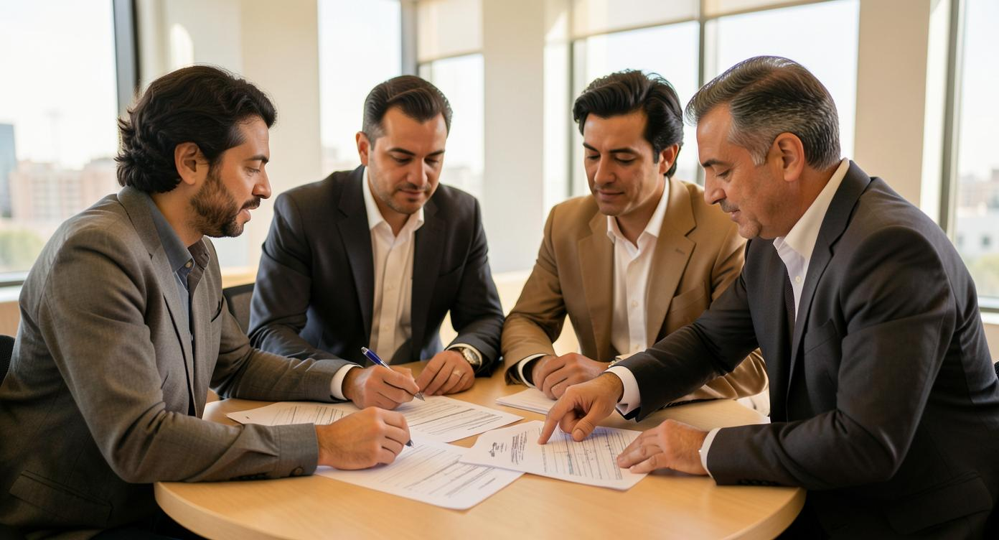

Un cabinet de Casablanca, habitué aux dossiers qui traversent les frontières.
Dix-huit personnes, cinq associés et une pratique construite auprès de groupes familiaux marocains comme de filiales de sociétés européennes.


Une pratique de terrain, pas une vitrine.
Le cabinet a été fondé par deux experts-comptables formés en cabinet international, avec une conviction simple : une PME marocaine mérite le même niveau de rigueur qu'un groupe coté, avec un langage plus direct.
Nous avons accompagné des industriels du textile à Settat, des éditeurs de logiciels à Rabat, des opérateurs logistiques à Tanger Med, et des investisseurs européens qui s'installaient à Casablanca Finance City.
Cette diversité nous a appris à poser une question avant de produire un tableau : à quoi cette information va-t-elle servir ?
- 18 Collaborateurs
- 5 Associés
- 200+ Clients accompagnés
- 15 ans D'existence
Quatre règles que nous nous imposons
Elles ne figurent pas dans une plaquette commerciale : elles déterminent qui nous acceptons de prendre comme client, et comment nous travaillons.
-
01
Chaque chiffre est justifiable
Un compte non documenté n'est pas un compte. Nous préférons signaler une zone d'incertitude plutôt que de la lisser.
-
02
Les honoraires sont annoncés
Forfait écrit, périmètre listé, suppléments éventuels indiqués à l'avance. Aucune facture ne doit surprendre.
-
03
Nous répondons vite
Toute sollicitation reçoit une réponse sous 24 heures ouvrées, même si la réponse est « nous vérifions et revenons demain ».
-
04
Le dossier reste confidentiel
Accès restreint aux collaborateurs de la mission, sauvegardes chiffrées, aucune donnée client utilisée à des fins commerciales.
Les associés
Un associé signataire par dossier, présent aux étapes qui comptent : cadrage, restitution et décisions difficiles.

-
Audit
Younes Berrada
Expert-comptable, commissaire aux comptes. Dix-huit ans de pratique, dont sept en cabinet international. Spécialisé dans l'industrie et les groupes familiaux.
-
Fiscalité
Salma El Fassi
Docteure en droit des affaires, responsable du pôle fiscal et juridique. Elle accompagne les structurations d'implantation et les contrôles fiscaux.
-
Social
Hicham Ouazzani
Responsable du pôle social et paie. Ancien responsable paie d'un groupe de 900 salariés, il intervient sur les audits sociaux et les restructurations.
-
Conseil
Nadia Cherkaoui
Diplômée en finance, elle pilote les missions de business plan, d'évaluation et d'accompagnement à la levée de fonds.
Nous recrutons. Le cabinet accueille chaque année deux stagiaires en expertise comptable et un assistant juridique. Candidatures par email, avec CV et lettre courte.
Cadre professionnel
Le cabinet exerce dans le cadre réglementé de la profession d'expert-comptable au Maroc.
Inscriptions et assurances
- Inscrit au tableau de l'Ordre des Experts-Comptables de Casablanca.
- Responsabilité civile professionnelle couverte, attestation sur demande.
- Commissariat aux comptes exercé dans le respect des incompatibilités légales.
- Procédures internes de contrôle qualité sur chaque dossier signé.
Vos données
Les pièces comptables sont hébergées sur des serveurs situés dans l'Union européenne, avec accès nominatif et journalisation. Une copie de sauvegarde quotidienne est conservée trente jours.
Venez nous voir. Le cabinet est à dix minutes de la gare Casa-Port.
Un café, vos derniers comptes si vous les avez, et nous regardons ce qui peut être amélioré.